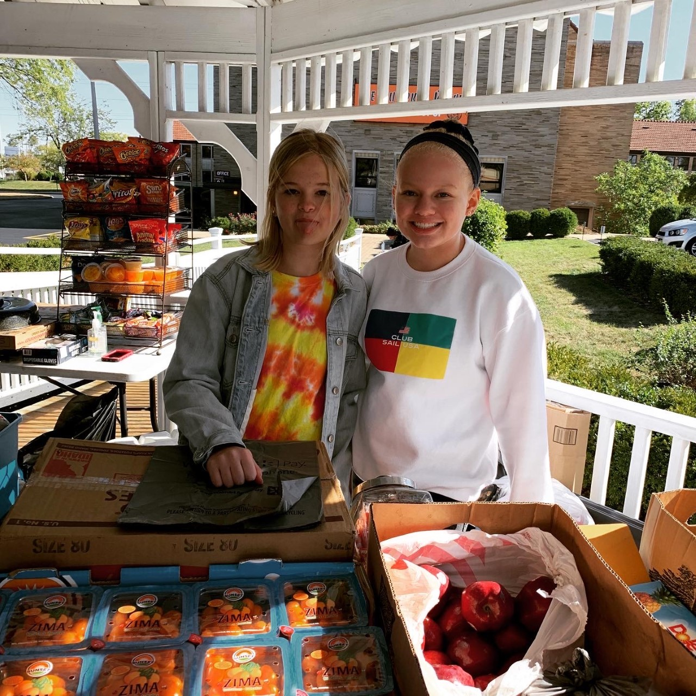

Classes and Clubs
This page houses information about my STEM experiences, science fair, and the school clubs I participate in. During my time at STEM, I have learned some valuable skills that are not regularly taught in a typical high school. Some of these skills include; learning CAD (computer aided design), operating a 3D printer, designing files to be laser cut or vinyl printed, managing a vinyl printer, and conducting a laser cutting operation. Also, I learned to code this website! On this page, you can read about my growth in the previously mentioned items and view pictures and artifacts to get a feel for what my STEM education has been like. I have also written about some school clubs I enjoy and about my previous science fair projects.
CAD and 3D Printing
Before you can 3D print an item, you must design or model it digitally; this is called CAD. CAD stands for computer aided design, and it can be done on multiple platforms. For all of my 3D printed projects, I used Autodesk Inventor. Below are some pictures of what a CAD model looks like, compared to the final product. In Freshman year, I designed a claw for my little sister, Ayami, to use opening her Christmas presents. Ayami has Cerebral Palsy which affects how she functions in day-to-day operations, it especially changes the way she uses her hands. The claw I designed fits almost like brass knuckles, and has a shredding tool that covers her palm to rip wrapping paper.
You can see in the model above, the special elements I included in the design to make wearing the claw comfortable. The finger-holes have filleted, or smooth, edges so her fingers wouldn’t get sore and I added divots into the palm piece to make sliding her fingers into the tool easier.
Designing For Laser Cutting and Vinyl Printing
Before printing an item on the vinyl printer, you need to create a design to print. I used Adobe Illustrator for this process. I have included a few pictures of the designs I printed during school. Operating a vinyl printer is fairly similar to operating a regular printer, but with a few extra steps. Vinyl printers usually have blades running through them to cut the thick vinyl into strips. It is important to ensure these blades are running smoothly, otherwise the operation is pretty simple. Below, I have included two designs I vinyl printed.
I created the templates for my laser cutting projects in Adobe Illustrator also. My Freshman year, I built and modeled a bird house using CAD software, then created a laser cutting template from the original model. Using a laser cutter, I cut out pieces of wood to assemble into the house. This bird house was later donated to a local women’s shelter in my area. I really hope the women who fled their situations found joy in my bird house. Below are pictures of laser cutting template, and my final product.
Coding for HTML
By far, coding has definitely been the most enjoyable skill I’ve learned. I really enjoy writing code, designing websites, and solving problems within my code. In fact, this entire website has been a project I have built on since 8th grade, when I first started coding classes.
Key Club
Key club is an organization for those who wish to complete community service projects in the local area and help with school events. I joined Key Club Freshman year, and I absolutely love it. I have enjoyed meeting new people at volunteering events and participating as an active member of my community. My most memorable volunteering experience has been serving victims of the Memorial Day Tornadoes. In 2019, a total of 21 tornadoes were reported across the state from the evening of May 27 into the early morning of May 28. Even months after the event, several communities had remained destroyed. I was given the opportunity to serve food to those who’s homes had been destroyed, it was a very touching experience. Hearing the stories of the people I met and interacting with them really reminded me of my privilege. My family has had financial struggles, but I know if our house was destroyed we would be taken care of. I truly learned the value of showing care and compassion to everyone I meet.
Student Government
In Student Government, I help plan school events and complete projects around the school. In Junior year, I designed and completed a project for Earth Day. I created pamphlets with instructions on how to create a recycled greenhouse with household materials. These pamphlets also included information about Earth Day and fun facts about the environment. I distributed these pamphlets along with packets of different flower seeds. It was super cool receiving pictures of people’s completed projects. My favorite part of Student Government has definitely been pursuing projects I am passionate in. Below is a template of the pamphlet I created!
Student Ambassador
As a student ambassador, I give tours of the building and talk to perspective families. I like being an ambassador because I get to meet new people and show off the school that I love going to. Below is a picture of my friends and I after a STEM info session Sophomore year.
National Honor Socitey
In National Honor Society, members complete service projects for the school and community. My most recent project, was a food drive to help STEM families in need. Here I am holding my NHS certificate!